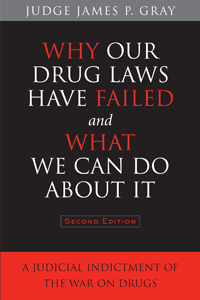

A forceful argument for why we need to repeal drug prohibition
A forceful argument for why we need to repeal drug prohibition


 A forceful argument for why we need to repeal drug prohibition
A forceful argument for why we need to repeal drug prohibition

|  |
Why Our Drug Laws Have Failed and What We Can Do About ItA Judicial Indictment of the War on DrugsSecond EditionJames P. Graypaper EAN: 978-1-43990-799-3 (ISBN: 1-4399-0799-4) |
Veteran trial judge and former federal prosecutor Judge James P. Gray believes drug prohibition remains one of our country's biggest failed policies. In this updated edition of his bestseller, Why Our Drug Laws Have Failed and What Can We Do About It, Judge Gray provides startling information about drug-related crimes—from escalating incarceration rates to drug-related kidnappings. Judge Gray also examines the latest experiments in drug legalization. The thirteen states that have adopted medical marijuana have seen a reduction of crime and an increase in revenue.
Judge Gray explains how and why we need to take the profit out of the drug trade. There are viable options at work in other countries—Portugal saw a drop of 50 percent in drug usage for problem users after decriminalization, as well as a drop in children's drug use!
This incendiary book will anger readers, but it also provides hope. We can solve some of our medical and social problems—by repealing our failed drug laws.
Excerpt available at www.temple.edu/tempress
PRAISE FOR THE FIRST EDITION
"Here's a scathing jeremiad against the war on drugs, notable both for the author's position and for the sustained anger of its argument."
—Publishers Weekly (starred review)
"Judge Gray's thorough and scholarly work, based as it is on his personal experience, should help considerably to improve our impossible drug laws. [His] book drives a stake through the heart of the failed War on Drugs and gives us options to hope for in the battles to come."
—Walter Cronkite
"James P. Gray,a [retired] California Superior Court judge and a former Republican congressional candidate, has written perhaps the most convincing indictment ever that the war on drugs can never be won. ...Gray's careful, sobering book provides grounds for taking a fresh look at our national drug policies."
—Philadelphia Inquirer
Preface to Second Edition
Part I: Introduction
Part II: Our Drug Laws Have Failed
1. Past and Present
A Historical Perspective
Emergence of the Prison-Industrial Complex
2. Increased Harm to Communities
Communities Awash in Illicit Drugs
Violence and Corruption
Domestic
Foreign
3. Erosion of Protections of the Bill of Rights: Where's Paul Revere?
4. Increased Harm to Drug Users
Demonization
Deterioration of Health
5. Increased Harm for the Future
Conspiracy Theories
Government Policy: Don’t Discuss It!
Part III: Options
6. Increased Zero Tolerance
7. Education
8. Drug Treatment
Rehabilitation
Medicalization
Needle Exchange Programs
Drug Substitution Programs
Drug Maintenance Programs
9. Deprofitization of Drugs
Legalization
Decriminalization
Regulated Distribution
10. Federalism, Not Federalization
Part IV: What We Can Do About It
Appendix A: Resolution
Appendix B: Government Commission Reports and Other Public Inquiries
Index
James P. Gray is a retired judge of the superior court in Orange County, California, and a former federal prosecutor in Los Angeles. He made an unsuccessful run for the U.S.Congress as a Republican in 1998 and for the U.S. Senate as a Libertarian in 2004. Judge Gray has discussed issues of drug policy on more than five hundred radio and television shows and in drug policy forums around the country (see www.JudgeJimGray.com), and has received numerous honorary degrees and public awards for his many civic-minded efforts..
Law and Criminology
Sociology
Political Science and Public Policy
© 2015 Temple University. All Rights Reserved. This page: http://www.temple.edu/tempress/titles/1589A_reg.html.